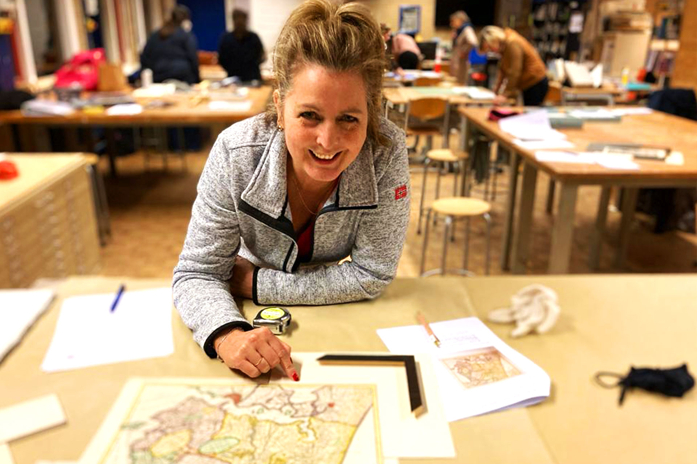
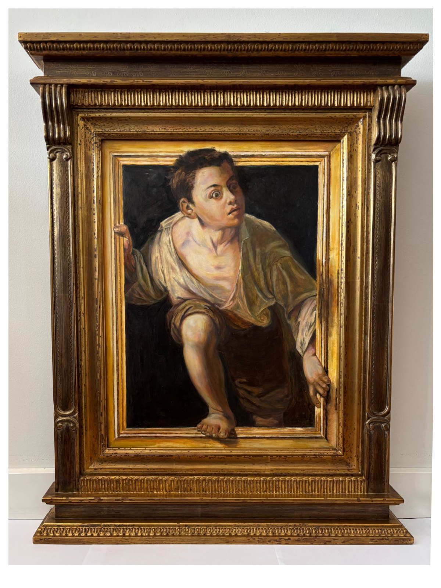

Kijken vóór kiezen
Geen snelle standaardkeuze, maar een inlijsting die past bij het werk, de plek waar het komt te hangen en de uitstraling die u zoekt.
Visie
De Lijsterij is ontstaan vanuit een liefde voor kunst. Hier krijgt een werk de aandacht en bescherming die het verdient. Vakmanschap gaat verder dan een mooie omlijsting — het is de zoektocht naar balans: tussen het kunstwerk en de ruimte, tussen behoud en esthetiek, en tussen jouw persoonlijke smaak en mijn vaktechnisch advies.


Mijn liefde voor het vak begon bij het zelf vasthouden van het penseel. Door jarenlang te schilderen en te experimenteren met technieken en compositie, leerde ik kijken naar wat een beeld nodig heeft om tot zijn recht te komen.
Juist die zoektocht naar de perfecte presentatie en bescherming van mijn eigen werk, bracht mij bij de opleiding tot lijstenmaker. Die achtergrond als kunstenaar is nog steeds mijn basis: ik kijk naar kleur, licht en balans voordat ik ook maar één lat zaag.
Lijsten maken vraagt om inzicht in materiaal en aandacht voor detail. Of het nu gaat om een strakke, moderne presentatie of een handgemaakte tabernakellijst — waarin mijn voorliefde voor historische technieken samenkomt — het doel blijft hetzelfde: het werk versterken zonder het te overstemmen.
Ik zie het als mijn taak om een werk niet alleen tot zijn recht te laten komen, maar ook te beschermen voor de toekomst. In het atelier komen ambacht, kunstgeschiedenis en conservering samen.

In dit werk komen mijn beide werelden letterlijk samen. De jongen die uit zijn kader stapt, is een door mij geschilderde trompe-l’oeil naar het beroemde werk Escapando de la crítica (1874) van Pere Borrell del Caso in een complexe, architecturale tabernakellijst.
Geen snelle standaardkeuze, maar een inlijsting die past bij het werk, de plek waar het komt te hangen en de uitstraling die u zoekt.
Zuurvrije en archiveerbare materialen, passend glas en degelijke afwerking zorgen dat een werk niet alleen mooi oogt, maar ook goed bewaard blijft.
Van ingetogen en modern tot rijk en klassiek: de omlijsting moet het werk versterken en tegelijk passen bij wie u bent en waar u woont.

Voor het televisieprogramma De Nieuwe Vermeer verzorgde ik de inlijsting van een van de werken. Het betreffende schilderij werd uiteindelijk uitgeroepen tot winnaar.
De omlijsting vormde het sluitstuk dat de uitstraling en de historische samenhang van het werk compleet maakte.